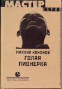

Сверху курсивом — фриз, потом капитель с абаком в виде морской волны. Внизу — фундаментальная база со скоциями вип-персон и вип-персоновых фотографий. Течение мысью по вертикали роднит aнтичные ордеры с любезной нам Готикой… То ли весенний гон, то ли тяга к прекрасному после гриппа хронически обострилась.
Бывают книги про правду. Про колхоз и березку, про босоногое детство и сыворотку травы, про голенастых цыплят, бельевые прищепки и кринку ледяного с подполу молока. Такие книги пишут друзья Басинского: Борис Евсеев, Алексей Варламов, Олег Павлов. Про смысл жизни. А бывают книги, про которые пишу я, чтоб с Басинским паритет был. От первых они отличаются, как джазовый квадрат от сюиты.
Jazz — это мусор. Но Паркер или Колтрейн — нет. Из идиотского куплета про крошку Минни можно выдуть целую «вибрирующую вселенную», и это будет Музыка Сама По Себе (то есть собственно ни о чем). Но если музыке это природное свойство (быть ни о чем) прощают, то литературе — как-то не очень. Слово ж, считается, от мозгов происходит…
 Вот про «Голую пионерку» и написали: мол, и Богородица она, и на рандеву со Смертью зовет, и «Лолиту» набоковскую длит куда-то… Автору, конечно, приятно. Но на самом деле его текст — это игра, происходящая от нажимания на клапаны, то есть на кнопки. Пальцы — быстрее мысли, в этом секрет игры. Читать, наоборот, надо медленно, интонируя каждую фразу: если подрезать страницы наискосок, в голове остается лишь «смысл» — глупая крошка Минни.
Основной шик кононовской импровизации — это советский язык. Родившийся в корчах улиц, от любви канцелярской скрепки к широте и загадочности русской души, он так и не дождался своего Пушкина, хотя Платонова и Зощенко, конечно, дождался. Но у Зощенко язык слился с идиостилем, а у Платонова оказался пронизан какой-то слишком уж субъективной, не эпической трагедийностью. Кононовский сов-яз гораздо ближе к коллективному бессознательному пост-фрейд-структуралистов.
Забавно наблюдать, как после пятнадцатистраничного монолога героини автор пытается завладеть точкой фокализации, но уже через пару абзацев снова сбивается на заразный пионеркин «поток» и покорно лишает себя слова. Вспоминается Бродский: «Не мы им, а он нами». Или пушкинское «взяла да и вышла замуж».
Эксклюзивно можно вспомнить книгу Валентины Чудаковой «Чижик — птичка с характером»: очевидно, генезис пионеркиного дискурса (если уж без дискурса невмоготу) следует искать не в «Лолите» (и не в копеечном «Чонкине», как второпях предложил автор предисловия), а именно там. «Чижик» — «Муха»… И т. п.
Хорошо бы еще рассказать, о чем книга, но… Пересказывая «Голую пионерку», неизбежно выглядишь идиотом. Знаю — тренировался. Скажем, есть у меня такой альбом репродукций, там к каждой картине прилагается ее описание. Вот осенний рыжий пейзаж, в середине — уголком кисти — кобальтовая запятая. В описании сказано: «В глубине картины виднеется фигурка погруженного в свои мысли человека в синем плаще». Можно ли сказать, что это в корне неправильно? Нельзя. Но тем не менее — идиотизм.
Эпиграф из Рёкана («После себя — что оставлю на свете? Кукушку — весной, цыплят — осенью…») и вынос на обложку («Роман номинирован на премию НАЦИОНАЛЬНЫЙ БЕСТСЕЛЛЕР») говорят о наличии у автора и издателей здоровых историко-культурных амбиций. Опять-таки, подписант предисловия и отец-основатель «Нацбеста» — одно лицо… Искренне желаю именно этой книге большой судьбы. Это было бы по-петербуржски, по-путински. Чем, как ни плотницким топором, пустить кровь боярской Москве?..
…Которая, впрочем, сама себя удушает. Уже несколько выпусков наши читатели лишены главного, ради чего затевался «Естественный отбор»: честных, правдивых сплетен. Это было связано с неблагоприятным расположением лит-звезд в первопрестольной; подробности слишком ранят, углубляться не будем. Сейчас под предлогом календарно установленного веселья мне позволено протиснуться первоапрельским ростком меж взопрелых, обтянутых парчой задниц.
Под видом шутки открою правду: происходит что-то Страшное и Большое. Кроме непотопляемого (потому что душа легче воды) меня на литературном горизонте скоро не останется фигурок, погруженных в свои мысли. Брат-обозреватель дохнет, что таракан. Справа по фронту отравился природным газом ежедневник «Сегодня», и квадратно-гнездовой Митя Ольшанский, того гляди, лишится своего медиа-шестка. А это честный, правильный либерал-фашист, если он сгинет в сумерках Интернета, будет обидно.
Слева под предлогом рождения очередного потомка ушел из борьбы Миша Вербицкий. Пламенный гонитель Сорокина, Курицына и иже с ними, по слухам, дернул на Запад — набивать перину своего гнева тамошним нелитературоцентричным пером. А это дело небыстрое, кропотливое.
Ближе к центру тоже сплошной ящур. Последовательный в своем мелкобуржуазном буддизме Слава Курицын обрел внутренний город Корниш, штат Коннектикут в постыдном менеджерстве над интернет-магазином «Озон». Мамона не то чтобы съела художника, но как-то заволокла туманом.
Абсолютно центрового Бориса Кузьминского ухайдакало медной трубкой. Получив интернетовскую Интел-премию за лучший литературный проект, он трагически надломился и превратил свой некогда рулящий «Круг чтения» в фигуру «Памяти бублика»: одинаковые бубнилки да странные републикации из «Коммерсанта»; только хайдеровский тапас Александра Агеева методом «от противного» напоминает о былом пиршестве колумнистики.
Или то финансовая депривация виновата?.. Показательно, что лучшее (не считая моего ученика Миши Леонтьева) перо России Аделаида Метелкина тонущий пароход чутко освободила. По договоренности со звездой от ее имени временно вещает сам машущий саблей перед бегущим войском Кузьминский. Но результат… Не стало женщины в russком селении, да.
Близкое к коровьему бешенству «Книжное обозрение» (в планах издателей — печататься золотом на телячьей коже) свою колонку вдруг извело, «Exlibris НГ» — потянул да не вытянул, а оставшиеся в поле зрения рудименты (типа Немзера во «Времени Новостей») при всем нашем уважении к истории русской критики всерьез рассматриваться не могут.
Столичная литжурналистика в одночасье почила на вялых и безликих рецензиях, каковые вполне могут составлять текстовые роботы или технические редакторы. В новый вегетативный сезон вступаем без аналитики. Видимый литературный процесс скукожился до размеров книжного рынка, Белинских травят и удушают, небелинские превратились в пресс-атташе издательств и рецензентов интернет-магазинов. И если в затоплении станции «Мiръ» виновато НАТО (или НАСА — один черт), то кто виноват в синхронном дефолте русской литературной критики?
Вопрос не риторический, к двенадцатому апреля (тьфу-тьфу, после гриппа-то) я на него отвечу. А пока — пусть враги потрепещут. Черновики в сейфе у адвоката.